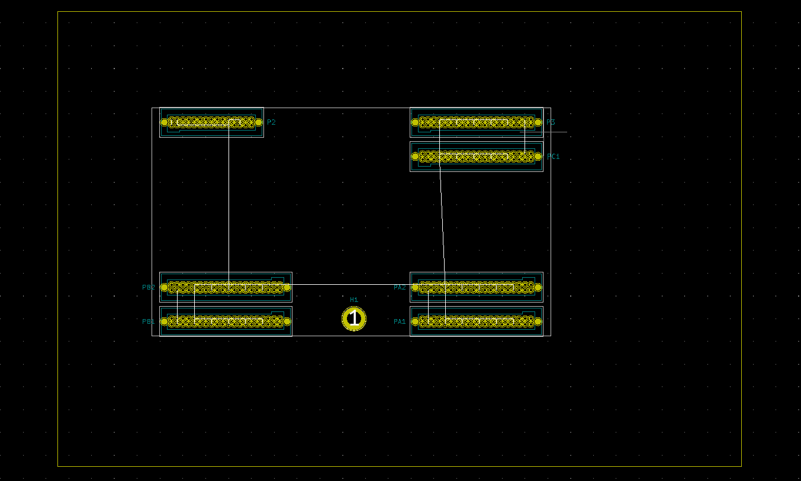
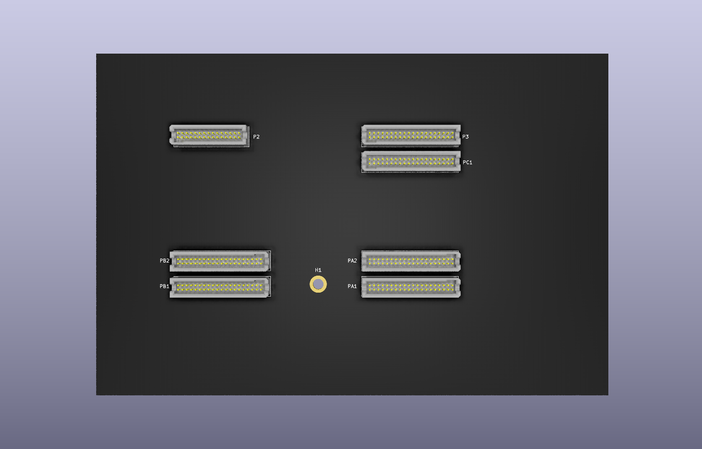

This project template is a starting point for creating a baseboard compatible with
Snickerdoodle.
snickerdoodle is a prototype-to-production platform for building high-integrity IoT products.
The final PCB looks like this:


(c)2020 Cameron McQuinn.